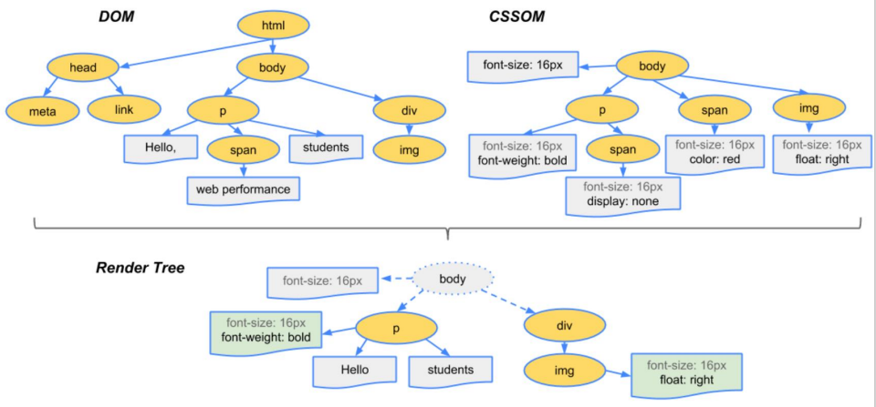
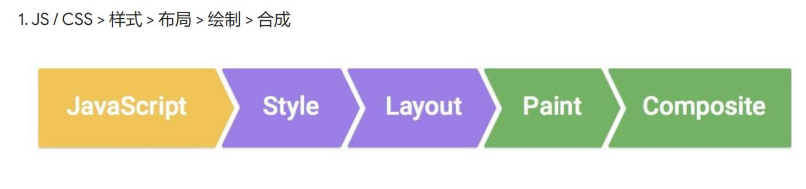
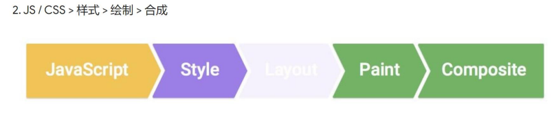
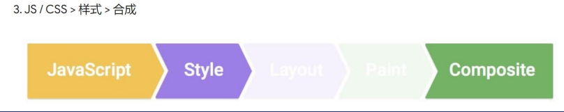

CSS动画
动画的原理
如何实现一个div从左往右移动的动画呢？
第一种方法：通过设定 left
- 原理
- 没过一段时间（用setInterval做到）
- 将div移动一小段距离
- 直到移动到目标地点
- 注意性能
- 绿色表示重新绘制（repaint）
- CSS 渲染过程依次包含布局、绘制、合成
- 其中布局和绘制有可能被省略
1 | <!-- 关键是通过改变left实现div右移 --> |
第二种方法：通过用 transform + transition
- 原理
- transform: translateX(0 => 300px)
- 直接修改会被合成，需要等一会修改
- transition 过渡属性可以自动脑补中间帧
- 注意性能
- 并没有 repaint (重新绘制)
- 比 改left 性能好
1 | <div id="demo"></div> |
第三种方法 animation
- 使用步骤
- 声明关键帧
- 添加动画
1 | from to 写法： |
1 | <div class="wrapper"> |
浏览器渲染原理
浏览器渲染的过程：
- 根据HTML标记并构建DOM树
- 根据CSS构建CSS树（CSSOM）
- 将两颗树合并成一课渲染树（render tree）
- Layout布局（文档流，盒模型，计算大小或位置等）
- paint绘制（边框颜色，背景颜色，阴影等绘制）
- composite合成（根据层叠关系展示画面）

如何更新样式
- 一般用JS来更新样式
- 比如 div.style.background=’red’
- div.style.display= ‘none’
- div.classList.add(‘red’) 直接增加 类，更优
- div.remove()直接删掉节点
更新样式的三种方式

- 根据浏览器的渲染原理，若是开发者更新了样式（即 元素的几何属性，如宽高、位置等），则浏览器会检查所有属性然后重新绘制，最后再合成，之前 修改left法，就会每次都让浏览器重新布局、渲染、合成,全走一遍，比如：div.remove

- 如果开发者只是更新了paint only的属性（如 背景颜色、文字颜色等），由于不影响页面布局，则浏览器直接执行绘制，跳过layout, 比如：改变背景颜色，直接 repaint + composite

在开发者只是更改一个既不更改布局也不需要绘制的属性时，浏览器将只执行合成，例如animation 和 transform，只需要composite
查看CSS各属性触发什么: https://csstriggers.com
CSS 动画优化
- 答案在这里 Goole写的文章，谁看完谁牛X
- 使用 left 代替 transform
- JS 优化：使用requestAnimationFrame 代替 setTimeout 或setInterval
- CSS 优化：使用 will-change 或 translate
- 完全就是死记硬背
CSS动画–跳动的心：两种做法(transition 和 animation)
- transition(过渡)：http://js.jirengu.com/totisamoke/1/edit?html,css,output 跳动的心–transform+transition(过渡)+hover
- animation: http://js.jirengu.com/veqeroxano/1/edit?html,css,output 跳动的心–animation
All articles in this blog are licensed under CC BY-NC-SA 4.0 unless stating additionally.